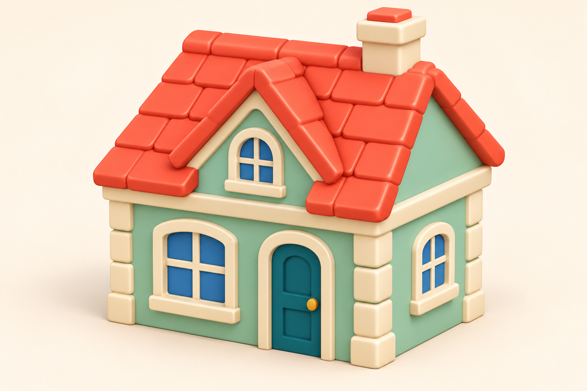

Референс для одной повторяемой 3D-модели. Модель встроена в dev (9a7f655); результаты — проверки GLB.

Четыре места в городе
Сохраняем текущие позиции и ширину 5. Высота около 4,6 и глубина около 4,2 — ориентиры, точные размеры проверим на GLB.
- Силуэт и материал из принятого концепта.
- Цельная крыша, непрозрачные окна, дверь у земли.
- Без подставки, лестницы и отдельных растений.
- Одна текстура 512 px; ориентир до 7 тыс. треугольников.
- После модели повторяем проверку всех 14 столбов и четырёх положений дома.
Габариты и проверки · Промпт и происхождение